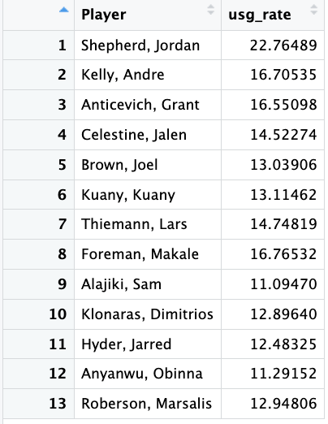
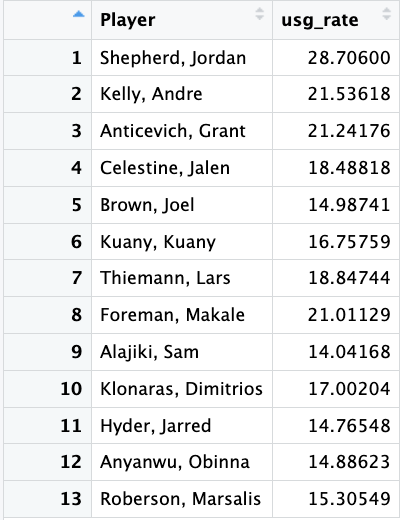
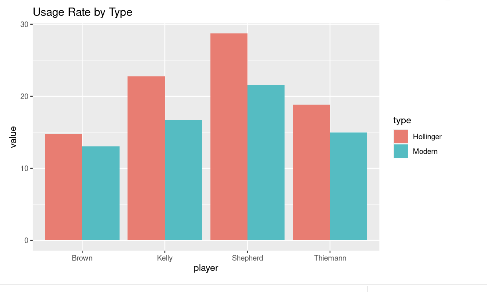

Conceptions of Usage Rate
By Shreeya Sethuraman | March 28, 2022

In professional and collegiate basketball, usage rate is defined as the percentage of team plays a player uses while on the court, assuming that the play culminates in a free-throw, field-goal attempt, or a turnover. Essentially, it encapsulates how often a player is actively making a difference offensively. Historically, we’ve used the formulas of Dean Oliver and John Hollinger, the forefathers of complex basketball analytics. The current formula can’t be traced back to a single individual, but is widely used inadvanced analytics.
The two preferred formulas (Hollinger’s and the contemporary) take into account any action that changes possession: a basket, turnovers, free throws, and a missed basket that isn’t rebounded by the possessing team. However, they also possess certain nuances that change the meaning of the term. For example, the contemporary percentage doesn’t
include assists, so players like Chris Paul and Russell Westbrook are portrayed as having a lower usage rate than would be expected using Hollinger’s formula. Though the modern calculation has this setback, neither formula fully encapsulates the process behind the shot, so players who choose to pass rather than shoot will have a lower USG% even though they are actively engaging offensively. While neither formula is perfect, these kinds of statistics are our best way of measuring a player’s offensive impact.
Therefore, players will have varying usage rates depending on their positions and strengths, but which statistics encapsulate the true offensive value of a player? I’m choosing to compare and contrast the calculations for usage rates on players of Cal’s basketball team in the 2021-2022 season. The players I’m using are Lars Thiemann (forward/center), Jordan Shepherd (guard), Andre Kelly (forward), and Joel Brown (guard).
It’s important to note the distinction between usage rate and usage percentage: usage rate only denotes the number of plays used per 40 minutes. Hollinger’s formula involves league and team pace, which outline the number of possessions the league and team have per game, respectively (see source #5).
league_pace = 70.1
team_pace = 66.9
hollinger <- cal %>%
mutate(usg_rate = ((fg_attempted + (ft_attempts * 0.44) + (assists* 0.33) + turnovers) * 40 * league_pace)
/ (total_minutes * team_pace)) %>%
select(Player, usg_rate)
The modern calculation is as follows:
team_min = sum(cal$total_minutes)
total_fga = sum(cal$fg_attempted)
total_fta = sum(cal$ft_attempts)
total_to = sum(cal$turnovers)
contemporary <- cal %>%
mutate(usg_rate = (100 * (fg_attempted + 0.44 * ft_attempts +turnovers) * (team_min / 5)) /
((total_fga + 0.44 * total_fta + total_to) *
total_minutes)) %>%
select(Player, usg_rate)
 Jordan Shepherd’s usage rate varies between the two calculations, with the contemporary value placing him at almost 6 points higher than Hollinger’s. The difference can be attributed to the inclusion of the rate of a player’s stats (contemporary places value in not just how well a player does, but how well a player does in comparison to their team) rather than just the stats themselves. Shepherd’s stats are higher than his teammates’, which is of lesser importance to Hollinger compared to the modern version.
In Joel Brown’s case, the margin is just approximately one point. Brown plays a crucial role in bringing the ball down after a turnover, but doesn’t play as large a role in making plays and finishing compared to Shepherd. This is reflected in his USG%, which is lower than Shepherd’s by over 10 points. He has 142 field goals made compared to Shepherd’s 414 but 97 assists compared to Shepherd’s 75, which is why the margin between the two is larger in the second version compared to the first (because the first version accounts for assists).
Thiemann is the leader in blocks, and the modern value is substantially higher than Hollinger’s. His free throw attempts and field goal attempts lie fairly close to the median of all the individual stats, which is why his usage rate is much higher in the modern value: because his stats are compared against his team’s, the rate is increased.
Lastly, Andre Kelly’s margin is also somewhat large (approximately 4 points off). Kelly is a playmaker across the court; he’s fourth in attempted field goals and tied for second in attempted free throws. He has a fairly low number of assists (17) as well as a low number of turnovers for the amount of playing time he has had (24). Because his stats are so high in comparison to the rest of his team, the modern value is boosted, but because his assists are low, Hollinger’s value is decreased.
If I were to create my own team based on these statistics, I would default to choosing players with extremely high usage rates. However, high usage rates are correlated with low efficiency. With higher usage rates come fewer ball touches by players and basketball then becomes an individual sport rather than a team one. For a team to work cohesively on offense, the players need to have diverse usage rates compared to one another.
Both calculation methods have their pros and cons, but overall, the differences create varying shades of essentially the same metric. It’s important to consider a holistic view of each player instead of boiling their potential down to one number.
Sources:
1. https://insider.espn.com/nba/hollinger/statistics
2. https://fivethirtyeight.com/features/how-did-basketball-end-up-with-four-versions-and-counting-of-one-stat/
3. https://www.nbastuffer.com/analytics101/usage-rate/
4. https://calbears.com/sports/mens-basketball/roster
5. https://www.teamrankings.com/ncaa-basketball/stat/possessions-per-game